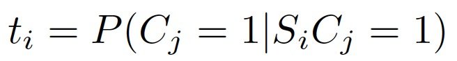
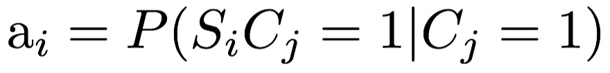
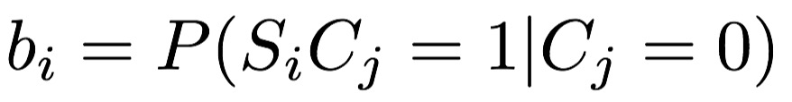
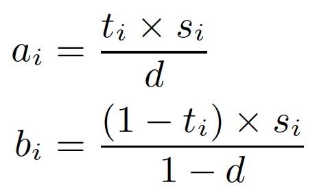
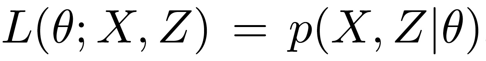
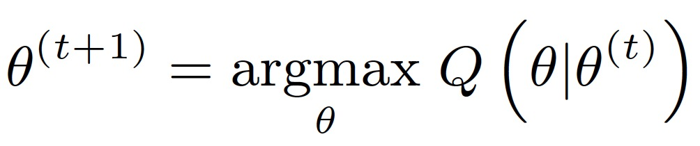

CSE 40437/60437 / A3
Assignment 3: Truth Discovery and Credibility Analysis
Twitter creates an open online data-sharing platform that allows average people to broadcast their real-time data at an unprecedented scale. However, tweets can be biased, noisy, outdated, incorrect, and thus, misleading and unreliable. Considering the massive amount of tweets and active Twitter users, it is very challenging to accurately ascertain both the correctness of each tweet and the reliability of each Twitter user. We call this challenge Truth Discovery.
In this assignment, you will learn how to use the maximum likelihood estimation (MLE) approach to solve the truth discovery problem on Twitter and analyze the credibility of tweets from a real-world case study.
Objectives:
Learn how to use the maximum likelihood estimation (MLE) approach to solve the truth discovery problem
Build an MLE based tweet credibility analysis tool using Expectation Maximization to analyze the credibility of reported tweets.
Truth Discovery as an MLE Problem:
To formulate the truth discovery problem in social sensing in a manner amenable to rigorous optimization, we consider a group of M sources, namely, S1, S2,...,SM, who make individual observations about a
set of N measured variables*, C1, C2,...,CN. In this assignment, we consider sources as
the Twitter users who report tweets during the observation period. Measured variables are represented by the clusters of tweets (e.g., the clusters you generated in Assignment 2), which represent observations about the same topic of an event.
* The measured variables are essentially the same concept as the term "claims" used in the literature.
In this assignment, we focus on the case of binary measured variables because the states of the physical environment in many applications can be represented by a set of statements that are either true or false. For example, "the bridge fell down", "the building is on fire" can be seen as a binary variable that is true if the statement is correct and false otherwise. Without loss of generality, we assume that "normal" state of each measured variable is negative (e.g., the bridge did not fall down and the building is not on fire). Hence, we assume that sources report only when a positive value of a measured variable is encountered.
The social sensing data we observed can be compactly represented by a Sensing Matrix SC,
i.e., SiCj=1 indicates that Si reports Cj to be true, and SiCj=0 otherwise. The truth discovery problem in social sensing can be formulated as a maximum likelihood estimation problem: given the observed data (i.e., Sensing Matrix SC), what is the likelihood of a source to make a correct observation and what is the correct state of each measured variable?
Here we give some specific definitions of the terms that will be used in the truth discovery problem formulation:
P(Cj=1) denotes the probability that the measured variable Cj is true
si denotes the probability that source Si reports an observation of a measured variable. It can be computed as the fraction of measured variables reported by Si over the total number of measured variables.
d denotes that the probability that a randomly chosen measured variable is true.
ti denotes the source reliability, which is often not known a priori. Formally, it is defined as:

ai denotes the (unknown) probability that source Si reports a measured variable to be true when it is indeed true. Formally, it is defined as:

bi denotes the (unknown) probability that source Si reports a measured variable to be true when it is in indeed false. Formally, it is defined as:

From the definition of si, ti, ai, bi and d , we can determine their relationship (using the Bayes' theorem) as follows:

Using the above terms, the truth discovery problem in social sensing is to jointly estimate the source reliability (i.e., ti ) and correctness of each measured variable (i.e., P(Cj=1)) without knowing either of them a priori.
For more details about how to formulate and solve the truth discovery problem, please read the IPSN12 Research Paper.
Introduction to Expectation-Maximization Algorithm (EM):
Expectation-Maximization (EM) algorithm is a widely used optimization technique to solve the maximum likelihood estimation problem (e.g., the one we formulated above).
Intuitively, what the EM algorithm generally does is to iteratively estimate the values of the unknown parameters of a model and the values of the latent variables, which are not directly observable from the data. This iterative process continues until the estimated results converge. To apply the EM (Expectation-Maximization) algorithm
to solve a maximum likelihood estimation (MLE) problem, we need to define a likelihood function ,
where is the estimation parameter of the model, X is the observed data and Z is the set of latent variables.
The EM algorithm finds the maximum likelihood estimate of and values of Z by iteratively performing two key steps:
E-step: Compute the expected log likelihood function where the expectation is taken with respect to the computed conditional distribution of the latent variables given the current settings and observed data.
 M-step: Find the parameters that maximize the Q function in the E-step to be used as the estimate of
for the next iteration.
M-step: Find the parameters that maximize the Q function in the E-step to be used as the estimate of
for the next iteration.

Here is the reference for more details about EM algorithm http://en.wikipedia.org/.
Note: The pseudocode of the EM algorithm to solve the truth discovery problem is presented as Algorithm 1 (Section 4.4) of IPSN12 Research Paper.
The Assignment:
- Synthetic Case Study:
In this part, you will develop a maximum likelihood estimator using Expectation Maximization to solve the truth discovery problem in social sensing and evaluate the performance of the estimator using synthetic datasets.
Task 1 :
Your estimator should take the Sensing Matrix file as the input and output the result file that contains the estimates of the correctness of measured variables. Recall that the Sensing Matrix describes the relationships between sources and measured variables. In particular, each line of the Sensing Matrix file is in the format of "source id, measured variable id" if a source reports an observation about a particular measured variable (i.e., SiCj=1). Please note that if a "Si, Cj" pair does not appear in the Sensing Matrix file, it means SiCj=0 in the Sensing Matrix. Please use this Sensing Matrix File to generate your output result files.
Hint: Regarding the convergence of the algorithm in this assignment, your estimator can (i) check the difference of the estimation parameter values in two consecutive iterations and decide to stop if the difference is smaller than a heuristic threshold; OR (ii) run a fixed number of iterations (e.g., 15 to 20 rounds) of the algorithm and then stop.
In addition, we provide you with some test input files for you to run some basic tests of your code. So please do not turn in results based on these test files. Meanwhile, you are encouraged to write a simple program to generate different Sensing Matrix files (where you control the ground truth) and test your code more extensively.
- Here are three test Sensing Matrix files: Test Sensing Matrix File1, Test Sensing Matrix File 2, Test Sensing Matrix File 3. Your estimator should do perfect classification of all the measured variables (i.e., zero false positives and zero false negatives).
- A Ground Truth file that contains the ground truth value of each measured variable (i.e., whether the variable is true or false). In particular, each line of the Ground Truth File is in the format of "measured variable id, correctness indicator", where the correctness indicator indicates whether a measured variable is true or false: 1 means true and 0 means false. Here is the Ground Truth File.
What to Turn In :
- A file that contains the estimation results of whether each measured variable is true or not. Since the variable is assumed to be binary, Cj is true if P(Cj=1)>=0.5 and false otherwise. In the result file, each line should be in this format: "measured variable ID, 1 or 0" , where 1 indicates the variable is true and 0 indicates it is false. The IDs of measured variables should be consistent with the ones specified in the Sensing Matrix File .
- The source code of your estimator to finish this task.
- Real World Case Study:
In this part, you will test your MLE estimator using a real world Twitter dataset. In particular, you need to construct the Sensing Matrix using the clustering results of Assignment 2 and then apply the MLE estimator on the Sensing Matrix to estimate the credibility of tweets. (Hint: You can take Twitter users as sources and clusters of tweets as measured variables in this case.)
Task 2 :
Generate the Sensing Matrix using the same Twitter Dataset of Assignment 2 Twitter Dataset Download and the Clustering Results File. Apply your MLE estimator to the generated Sensing Matrix to analyze the credibility of tweets.
Note: Please set the initial value of d to 0.5 to generate the results of this task.
What to Turn In :
(1) A file that contains all clusters ranked by their credibility scores (i.e., P(Cj)) from high to low. For each cluster, output the cluster ID (be consistent with the format of Clustering Results File) and the credibility score of that cluster.
(2) The source code to finish the above task.
Notes:
Please submit a README file about how to run your source code.
Please specify your Python version in your Readme file if your code is written a version different from Python 3.5.
Where to Turn In:
Your dropbox directory is:
~/esc-courses/sp20-cse-40437.01/dropbox/your_netid/A3
Deadline:
This assignment is due at at the beginning of class on Wed, March 4th.
Grading Rubric
It is available on Sakai/Resources/Assignments.